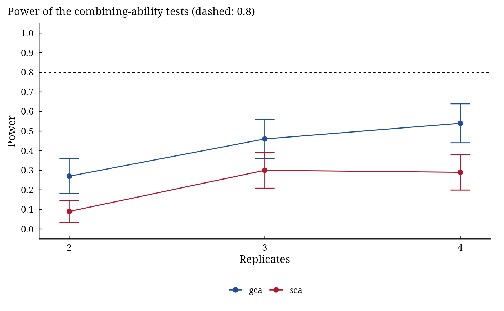

DiallelPower() estimates by simulation the power of Griffing's \(F\) tests of gca, sca and reciprocal
effects for numbers of replicates, so that the size of a diallel experiment can be planned.
Usage
DiallelPower(
Parents,
Method,
Rep,
Model = 1,
gca,
sca,
rec = 0,
Error,
nsim = 500,
alpha = 0.05,
seed = NULL
)
# S3 method for class 'da_power'
plot(x, ...)Arguments
- Parents
number of parents \(P \geq 3\).
- Method
Griffing's method,
1to4: which crosses are grown.- Rep
vector of numbers of replicates to compare.
- Model
1(fixed effects) or2(random effects): which tests.- gca, sca, rec
standard deviations of the gca, sca and reciprocal effects.
- Error
standard deviation of the plot errors \(\sigma\).
- nsim
number of simulated data sets for each number of replicates (default
500).- alpha
level of the tests (default
0.05).- seed
seed of the random numbers, or
NULL(default) to leave the generator as it is.- x
a
da_powerobject.- ...
unused.
Value
A data.table of class c("da_power", ...): columns Rep, Source (gca, sca,
reciprocals), Power and SE; plot() draws the power curves.
Details
For every number of replicates in Rep, nsim data sets are drawn with DiallelSim and
analysed with Griffing's closed forms; the power is the share of data sets whose test is significant at level
alpha, with its Monte Carlo standard error \(\sqrt{\hat{p}(1 - \hat{p})/n_{sim}}\).
The tests are those of Model: in Model 1 every line against the error, in Model 2 gca against sca. The
block effects do not change the tests and are left out.
See also
Other DiallelAnalysisR planning:
DiallelSim()
Author
Muhammad Yaseen (myaseen208@gmail.com)
Examples
pw <-
DiallelPower(
Parents = 6
, Method = 2
, Rep = 2:4
, Model = 1
, gca = 1
, sca = 1.5
, rec = 0
, Error = 4
, nsim = 100
, alpha = 0.05
, seed = 1
)
pw
#> Rep Source Power SE
#> <int> <char> <num> <num>
#> 1: 2 gca 0.27 0.04439595
#> 2: 2 sca 0.09 0.02861818
#> 3: 3 gca 0.46 0.04983974
#> 4: 3 sca 0.30 0.04582576
#> 5: 4 gca 0.54 0.04983974
#> 6: 4 sca 0.29 0.04537621
plot(pw)
